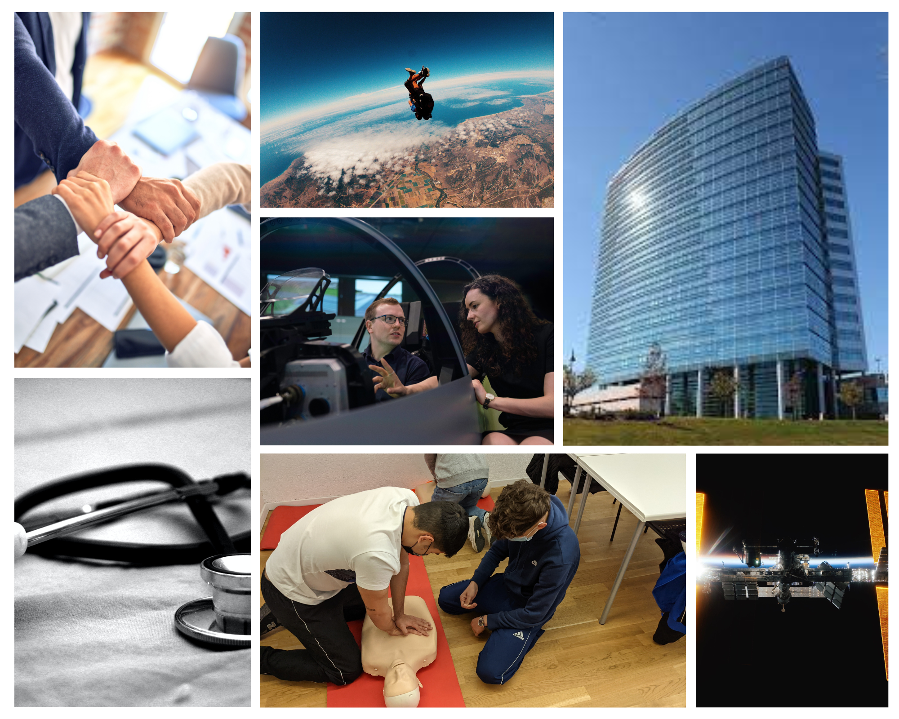
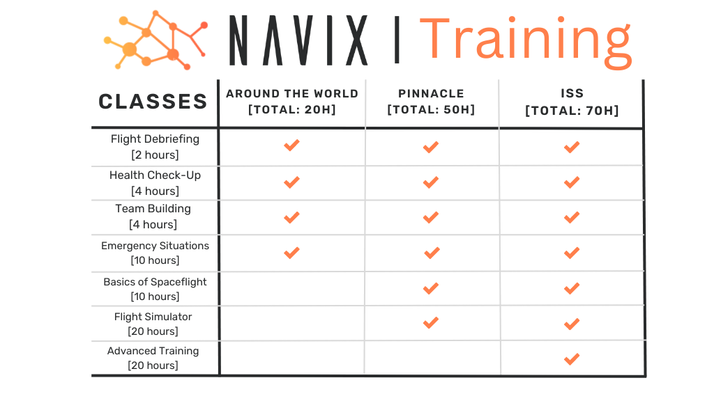

Training is a mandatory part of our tour package, provided at no extra cost.
Here, you will learn prerequisite skills at our state-of-the art training facilities to prepare you for your tour.
At Navix, we consider your safety to be of utmost importance.
While we don't expect you to become experienced astronauts before taking the trip,
we do require that you are familiar with basic skills in face of an emergency.
The goal of each class in the training regimen is to prepare you for your tour and uplift your confidence so you can enjoy the journey of a lifetime.
How It Works
Training involves both hands-on and in-class learning. The training regimen is built to take 3 to 10 days to complete, depending on your tour. Our training classes are taught by dedicated, trained, and certified staff with at least 3 years of flight experience. You must take part in all the prerequisite classes in order to fly, along with being cleared medically for the flight. Consult the chart below for specifics and to learn what classes you will need to take.
Navix training centers are spread out over all major cities in the US, along with some international locations as well. You will choose your personal training schedule and center after registration. For those who would like them, additional training resources, such as retaking a class, are available free of charge, based on Navix instructor availability and tour dates. If you have any questions, please contact us immediately.
Classes
Dive in to each class and get a headstart by learning what you'll be doing in each.
Time Required for Class: 2 hours
applies to all tours
Before embarking on the tour, you will first need to know what the tour involves. The pilots of your tour will explain the orbital parameters of the tour you are taking and also the entire trip itinerary. This is also a good time to meet up with the pilots and ask them any questions you might have. This class will help you understand the intricacies of what you're undertaking as you journey to space and how the tour's objectives will be met.
Time Required for Class: 4 hours
applies to all tours
Before embarking on your space adventure, it's important to ensure that you're in good health and ready for the rigors of spaceflight. That's where our health checkup comes in. In this class, our experienced medical team will perform a thorough assessment of your physical and mental health to make sure that you're fit to travel to space.
We'll monitor several important aspects of your health, from cardiovascular health and respiratory function to psychological well-being and stress management. If you're deemed to be in good physical and mental health, you will be allowed to continue on the tour.
Time Required for Class: 4 hours
applies to all tours
Our team-building class is designed to enhance teamwork and collaboration among passengers, preparing them for the unique challenges of space travel. Through a series of interactive exercises and group activities, passengers will learn how to communicate effectively, build trust, and work together to achieve common goals.
Our instructors will guide passengers through a variety of team-building exercises, such as problem-solving challenges and group activities. These exercises are designed to foster communication and trust and help passengers develop a deeper understanding of their individual strengths and weaknesses. By the end of the class, passengers will have gained valuable skills and insights into effective teamwork, which will aid them on the tour.
Time Required for Class: 10 hours
applies to all tours
While Navix has not as of yet had even a single life-threatening situation develop on its tours, emergencies can happen at any time, and it's crucial to have the skills and knowledge to know what to do then. While onboard a tour, you can have two kinds of emergencies: medical, wherein the pilot or a fellow passenger is affected, or orbital, which includes failure of mechanical systems on the vehicle you're using.
For onboard emergencies, such as failure of navigation or life support systems or a loss of pressure, you'll learn how to turn on backup systems, communicate with ground control, and otherwise be prepared for such an eventuality. For medical emergencies, you'll learn how to assess and treat a range of common injuries and illnesses, from cuts and burns to fractures and sprains. You'll also learn how to recognize the signs of more serious medical conditions, such as heart attacks and strokes, and how to respond effectively to these emergencies.
Our experienced instructors will guide you through hands-on training exercises, allowing you to practice and refine your skills in a safe and supportive environment. By the end of the class, you'll have the knowledge and confidence to handle a variety of medical and orbital emergency situations, making you a valuable asset.
Time Required for Class: 10 hours
applies to only the Pinnacle™ and ISS™ tours
This class was designed with the passengers of the Pinnacle™ and ISS™ tours in mind. This is meant to be a basic introduction to launched spaceflight, i.e., with rockets involved, unlike a conventional plane as with the Around the WorldTM tour. This class will discuss terminology and the science behind, well, rocket science, and also allow passengers on these tours to gain a deeper understanding of rocket-lashed spaceflight.
In about two days' worth of time, this class will cover the history of spaceflight, the evolution of rockets, and also the physics behind them. It will also go into depth about experiences specific to rockets, such as the G-forces you will have to face during launch and reentry and how recovery differs from the Around the World™ tour.
Time Required for Class: 20 hours
applies to only the Pinnacle™ and ISS™ tours
Our flight simulation class is designed to give passengers a realistic experience of space travel while also preparing them for the extreme pressures of launch and re-entry. Through a series of immersive simulations, passengers will learn what it's like to be an astronaut and get a taste of what it's like to travel through space.
Our experienced instructors will guide passengers through a variety of simulation exercises, allowing them to experience the feeling of launching into space, orbiting the Earth, and reentering the atmosphere. This class will help the passengers know what to expect and become acclimated to the tour experience.
Time Required for Class: 20 hours
applies to only the ISS™ tour
The Advanced Training class is specially designed for the ISS™ tour, keeping in mind that the passengers of this tour have to live aboard the ISS and stay in space for longer periods of time. Our team of experts will teach you the layout of the ISS, the rules and procedures to be followed onboard, and specific emergency procedures for the ISS.
This class will also exclusively focus on what it's like to live in zero gravity, including the issue of food and water in space and the importance of a proper sleeping cycle and exercise. You will also receive information about the activities offered to tourists aboard the ISS. You'll also have the opportunity to learn about daily life on the ISS and how it applies to the tour.